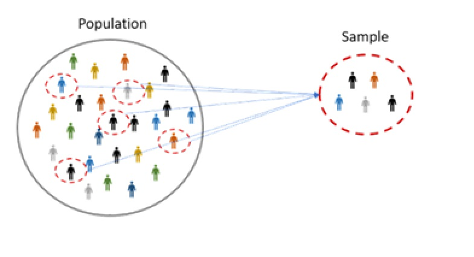

15:00
Sampling in Statistics
STAT 218 - Day 3
Today’s Outline
Investigation 1 Highlights
Counting Sheep: How Do We Sample Sleep? - In-class activity
Types of Sampling in Statistics
Investigation 1 Glossary and Highlights
Glossary
The terms that we saw in Investigation 1 were:
- Data
- Data Frame
- Observational Unit (case, study subject)
- Variable
- Categorical (sometimes binary if it has 2 sub-groups)
- Quantitative
- Categorical (sometimes binary if it has 2 sub-groups)
- Anectodal Evidence
- Observational Study & Experimental Study
- Empirical evidence were collected in these studies
Highlights
- Observational unit vs. Variables
- Study context is not a variable
- Subcategory vs. Categorical variable
- Measurement unit
Counting Sheep: How Do We Sample Sleep?
In-class activity (15 min.)
Instructions
- Choose an adjective + noun combination for your group based on today’s theme: Space
- You will be given 4 cases.
- Read each case carefully.
- Complete Step 1 (broad comparison) and Step 2 (detailed comparison) in the document.
- Be ready to discuss your ideas as a class.
Case A
The campus health department wants to study students’ sleeping patterns. They obtain a complete list of all 18,000 currently enrolled students from the registrar. Using a computer program, they assign each student a number and then randomly generate 200 numbers. The students with those numbers are contacted by email and invited to complete the survey.
Case B
The campus health department wants to study students’ sleeping patterns, but they take a more informal approach. An employee goes to the student center one afternoon and asks the first 200 students who walk by to fill out a short survey.
Case C
From the registrar, the health department learns that the student body is not evenly distributed: about 40% are freshmen, 28% sophomores, 20% juniors, and 12% seniors. Believing that sleep habits might differ by year in school, they divide the population into these four groups. Then they randomly select students from each group in proportion to its size — about 80 freshmen, 56 sophomores, 40 juniors, and 24 seniors — for a total sample of 200 students.
Case D
Instead of dividing students by year, the health department decides to use residence halls as the basis for their sample. They create a list of all the dorm buildings on campus and randomly select four entire dorms. Every student living in those selected dorms is surveyed about their sleeping patterns.
Sampling in Statistics
Introduction
If you use a proper sampling method to sample 1500 adults from an entire population of millions of adults, you can estimate fairly accurately, to within 3%, the percentage of the entire population who have a certain trait or opinion.
This result doesn’t depend on how big the population is as long as it’s much bigger than the sample.
It depends only on how many are in the sample.
That’s why researchers rely on public opinion polls rather than trying to ask everyone for their opinion.
- much cheaper to ask 1500 people than several million,
- takes less time to conduct a sample survey than a census, and
- better quality control (because fewer interviewers are needed).
Population and Sample
We’d like to know about an entire collection of individuals, called a population, but examining all of them is usually impractical, if not impossible. (e.g., all squirrels in Cal Poly)
So we select a smaller group of individuals, a sample, from the population.
- e.g. Eighteen (n = 18) squirrels lived in Cal Poly.
A subset of a larger population that accurately reflects the characteristics of the whole group is said to be representative sample.
To make the sample as representative as possible, select individuals for the sample by employing randomness.

Simple Random Sample
If a sample is determined through simple random sampling, it means that
- Every item, subject, specimen, or observational unit in the population has an equal chance of being selected in that sample.
- The selection of these members of the sample are chosen independently of each other.
How to Choose A Random Sample
To be able to gain benefit from employing randomness, we generally use tools to eliminate bias.
Here are the steps for choosing a random sample of n observational units from a population of interest.
- Determine the sampling frame: Give a unique ID number for each member (e.g., from 01 to 50).
- Find a source of random numbers.
- Continue until the intended sample size is reached.
Practical Concerns
- In many cases, choosing and implementing simple random sample is either difficult or impossible
- What should we do, then?
- How can we label ALL the squirrels in Cal Poly?
Nonsimple Random Sampling Methods
Of course, there are other random sampling options that are not simple. Two of them are:
- Random cluster sampling: Remember that we gave a unique ID number for each member (e.g., from 01 to 50)
- In random cluster sampling, unique ID numbers are assigned to clusters or groups of observational units (e.g., from 01 to 50), and then all the observational units in those clusters are recruited for the study.
- Stratified random sampling: Our population of interest may consists of various strata (e.g., age groups, biological sex, geographical region, grade levels of students).
- After determining the strata, multiple simple random samples are drawn from each stratum, and these multiple samples collectively represent a representative sample of the population of interest.
- Random cluster sampling: Remember that we gave a unique ID number for each member (e.g., from 01 to 50)
Stratified vs Cluster Sampling


Sampling Error vs Nonsampling Errors
- Sampling Error: The discrepancy between the sample and the population of interest.
- It is crucial to quantify this because that makes statistics one of the backbones of scientific thinking.
- There will always be a sampling error BUT
- If we use some nonrandom sampling techniques, sampling error will become unpredictable (sampling bias)
- Nonsampling Error: An error caused by other factors rather than sampling error.
- wording of the questions in a questionnaire
- nonresponse bias: e.g., bias occurs because of participants who are not responding some of the questions or not returning a written survey.
- missing data: e.g., experimental living organisms may die during the experiment, human subjects fail to participate in some/all of the sessions of a treatment group.
- …
Difficulties and Disasters in Sampling
Difficulties
Using the wrong sampling frame
Not reaching the individuals selected
Having a low response rate
Disasters
Getting a volunteer or self-selected sample
Using a convenience or haphazard sample
Closure
- In theory, designing a good sampling plan is easy and straightforward.
- However, the real world rarely cooperates with well-designed plans, and trying to collect a proper sample is no exception.
- If a proper sampling plan is never implemented, the conclusions can be misleading and inaccurate.